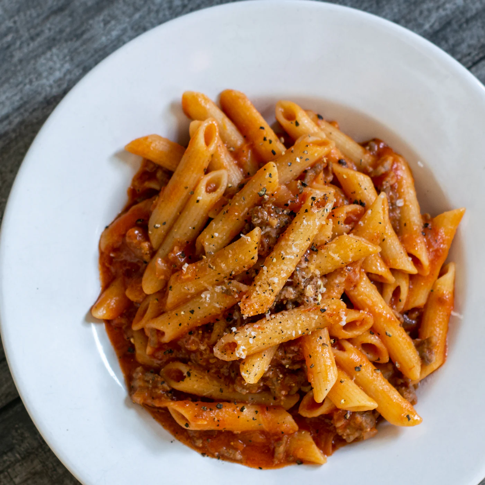

Vegan Protein Pasta

A hardy update to basic pasta.
Loaded with TVP (Textured Vegetable Protein), this pasta is loaded with 40g of complete proteins.
Ingredients
- 1 Serving boxed pasta
- 8 ounces pasta sauce
- 1 cup TVP (Textured Vegetable Protein)
- 3/4 cup water
- 1 tsp oregano
- 1 tsp basil
- Dash of black pepper
- 1 tbsp vegan parmesean cheese
Steps
- Hydrate 1 cup TVP with 3/4 cup water in microwave.
- Bring water to a boil on stove.
- Add pasta to water and cook for 7 minutes or until tender.
- Drain water.
- Add pasta sauce, TVP, oregano, basil, and black pepper.
- Top with 1 tbsp vegan parmesean cheese